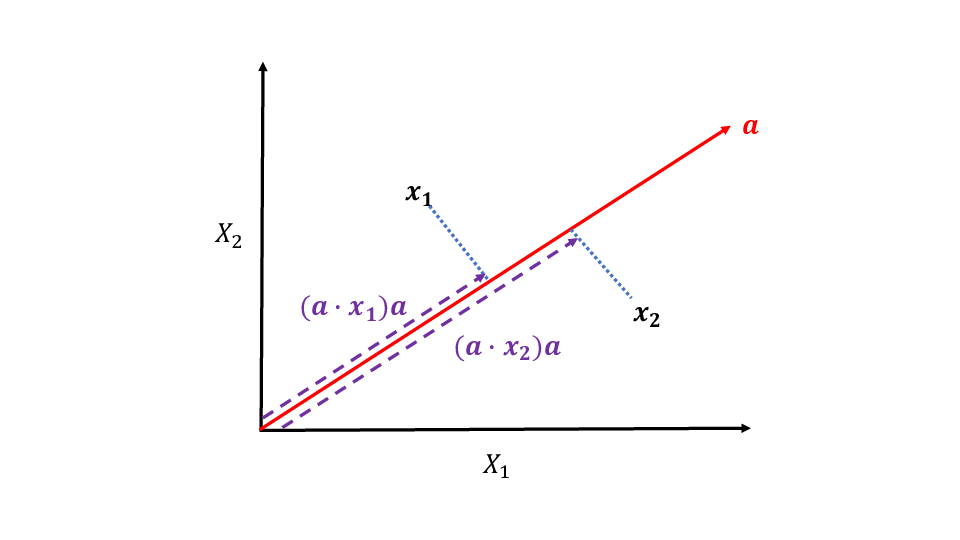

数理科学続論J
(Press ? for help, n and p for next and previous slide)
村田 昇
2019.11.08
変数と特徴量の関係 (線形結合):
特徴量は定数倍の任意性があるので以下を仮定:
prcomp() および princomp()prcomp() が優位princomp() はS言語(商用)との互換性を重視した実装prcomp() を利用prcomp() の使い方mydata: 必要な変数を含むデータフレーム## データフレームを全て用いる場合 prcomp(mydata) ## 列名を指定する(formulaを用いる)場合 prcomp( ~ x1の変数名 + ... + xpの変数名, data = mydata)

Figure 1: 観測データの直交射影 (\(p=2,n=2\) の場合)
観測データ \(\boldsymbol{x}_1,\dotsc,\boldsymbol{x}_n\) のばらつきを最も反映する方向を最適なベクトル \(\boldsymbol{a}\) とする
制約条件 \(\|\boldsymbol{a}\|=1\) の下で関数
を最大化せよ
\(f(\boldsymbol{a})\) の極大値を与える \(\boldsymbol{a}\) は 以下で定義される行列 \(\boldsymbol{X}^\top\boldsymbol{X}\) の 固有ベクトル:
(回帰分析のデザイン行列，Gram 行列を参照)
第1主成分得点:
固有値を重複を許して降順に並べる
固有値 \(\lambda_j\) に対する固有ベクトルを \(\boldsymbol{a}_j\)(長さ1)とする
\(\boldsymbol{a}_1,\dotsc,\boldsymbol{a}_p\) は 互いに直交 するようとることができる
第1主成分方向に関してデータが有する情報:
第1主成分方向の成分を取り除いた観測データ:
制約条件 \(\|\boldsymbol{a}\|=1\) の下で関数
を最大化せよ